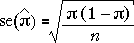

Le pire cas d'erreur standard
Lorsque l'estimation d'une proportion de la population (ou probabilité) π, p échantillon correspondant proportion est utilisée comme une estimation ponctuelle. Il a l'erreur-type

Cette erreur-type prend sa valeur maximale lorsque π = 0,5, ce qui donne une valeur plus pessimiste pour l'erreur standard. Quelle que soit la valeur de π, l'erreur-type de l'estimation sera inférieure à

Le diagramme ci-dessous montre l'erreur type estimée à partir d'un échantillon de taille n = 100.
Faites glisser le curseur pour étudier comment l'erreur-type dépend de p et constater qu'il est maximale lorsque p = 0,5. Notez également que l'intervalle de confiance résultant de π est plus large aussi pour cette valeur.
Rapports de l'exactitude d'une enquête
Les sondages d'opinion posent souvent des questions au sujet d'un large éventail de sujets. Chaque question peut être modélisée comme un échantillon aléatoire de certaines populations catégorique. Plusieurs proportions sont habituellement estimées à partir des données qui sont recueillies et chacun de ces estimations ponctuelles peuvent être associés à une erreur standard et intervalle de confiance.
Plutôt que de donner des intervalles de confiance séparés pour les proportions individuelles, les résultats du sondage sont généralement accompagnés par une valeurunique appelée la marge d'erreur du sondage. C'est le pire des cas '±' valeur pour un intervalle de confiance à 95% qui se pose lorsque p = 0,5.

Les valeurs '±' des intervalles de confiance à 95% pour toutes les proportions signalées dans le sondage sera inférieure à cette valeur — parfois beaucoup moins.
Le diagramme ci-dessous montre les intervalles de confiance à 95% qui se poseraient à partir d'échantillons de taille n = 100 pour toutes les valeurs possibles de p.Faites glisser le curseur pour voir les largeurs des intervalles de confiance.
Notez que l'intervalle de confiance est plus large lorsque p = 0,5 étroit et quand p est proche de 0 ou 1. (Notez cependant que nos lignes directrices sur la taille de l'échantillon implique que nous ne devrions pas utiliser ce type d'intervalle de confiance pour n = 100 lorsque p est inférieur à 0,05 ou plus 0,95.)
Sélectionnez Marge d'erreur dans le menu pop-up. Notez que
Exemple
Un exemple numérique illustre l'utilisation d'une marge d'erreur dans un sondage.
Le tableau ci-dessous montre les résultats d'un sondage d'opinion mené dans l'électorat de Palmerston North en Nouvelle-Zélande par le Département de l'Université Massey de marketing peu avant les élections générales en Nouvelle-Zélande en Octobre 1996.
| Candidat | Nombre intention de voter | Pourcentage | ||
|---|---|---|---|---|
| Steve Maharey (Travail) George Mathew (National) Gérard Hehir (Alliance) Jans Trevor (New Zealand First) Subvention de Bowater (Christian Coalition) Val Wilde (ACT) Autres |
|
|
Bien que le tableau exclut les répondants qui étaient indécis, a refusé de répondre à la question ou ont indiqué qu'ils ne voteraient pas, les données seront, au moins approximativement, un échantillon aléatoire de la population de ceux qui seront plus tard voter à l'élection.
Comme la taille de l'échantillon est n = 222, la marge d'erreur pour le sondage est de 0.067 — soit 6.7%.
Depuis Maharey obtenu environ1/2 des voix, un intervalle de confiance à 95% pour le vote de pourcentage pour lui est d'environ (51.4 ± 6.7). Cependant les intervalles de confiance calculé correctement pour les autres candidats serait plus étroite que cela.